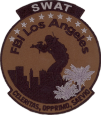
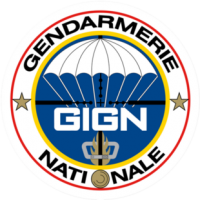
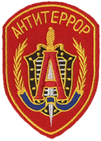

Подразделения Rainbow Six siege
SAS

Особая воздушная служба (Special Air Service), сокращённо SAS, также расшифровывается как Специальная авиадесантная служба (САС) — специальное подразделение вооружённых сил Великобритании, являющееся образцом для подразделений специального назначения во многих других странах по всему миру. Занимается разведкой сил противника, участвует в контр- террористических операциях и прямых вооружённых столкновениях, а также в освобождении заложников. Наравне с Особой лодочной службой, Особым разведывательным полком , Группой поддержки Сил специального назначения , Объединенным авиакрылом спецназа и 18-м полком связи спецназа SAS формирует войска специального назначения Великобритании под командованием начальника управления спецназа .
Корнями SAS уходит в 1941 год, когда были образованы воздушно-десантные подразделения в Британской армии, а в 1947 году SAS был преобразован и стал частью Территориальной армии Великобритании , получив название 21-й полк (стрелков-художников) Особой воздушной службы (21st Special Air Service Regiment (Artists Rifles)). Формально в корпус SAS был преобразован 31 мая 1950 года. 21-й и 23-й резервные полки SAS, входящие в состав 1-й бригады военной разведки, также являются частью Особой воздушной службы и в настоящее время, однако главным подразделением является 22-й полк SAS, подчиняющийся непосредственно войскам специального назначения Великобритании. Он получил мировую известность после того, как сумел взять штурмом иранское посольство в Лондоне в 1980 году и спасти заложников. Его сводный отряд служащих «Increment» действует в интересах внешней разведки MI6.
По уровню важности Особая воздушная служба находится выше Корпуса армейской авиации, но ниже пехоты Британской армии, поэтому на официальных церемониях и парадах британские десантники выходят после пехотинцев Британской армии.
Оперативники
- Sledge
- Thathcer
- Smoke
- Mute
SWAT

Команды SWAT ФБР (Federal Bureau of Investigation Special Weapons And Tactics Teams; FBI SWAT Teams) — специальные боевые подразделения Федерального бюро расследований (ФБР), эквивалент полицейского SWAT. Они имеются при каждом из 56 региональных отделов ФБР. В случае возникновения крупномасштабных проблем, если местные правоохранительные органы не имеют ресурсов для урегулирования ситуации, команды FBI SWAT из местного отдела, а также и за пределами региона, могут направиться для оказания помощи местным властям.
Структурно относится к отделу тактических операций Группы по реагированию на критические инциденты ФБР.
Оперативники
- Ash
- Thermite
- Castle
- Pulse
GIGN

Группа вмешательства Национальной жандармерии Франции, сокращенно называемая GIGN (Groupe d'Intervention de la Gendarmerie Nationale) — элитное антитеррористическое подразделение Французской жандармерии. Поскольку Национальная жандармерия одновременно подчиняется как Министерству обороны, так и Министерству внутренних дел, то Группа вмешательства Национальной жандармерии одновременно считается отрядом специального назначения как армии, так и полиции. Личный состав 380 человек. В задачи подразделения входит обезвреживание вооруженных преступников, в особенности связанное с освобождением заложников, контр-террористическая деятельность, разрешение ситуаций, связанных с захватом самолетов и бунтами в тюрьмах.
Штаб-квартира GIGN находится в Сатори, южнее Версаля
Оперативники
Spetsnaz

Управле́ние «А» Це́нтра специа́льного назначе́ния Федера́льной слу́жбы безопа́сности Росси́йской Федера́ции (Управле́ние «А» ЦСН ФСБ Росси́и) или Гру́ппа «А́льфа» (до 1991 года —группа «А» Седьмого управления КГБ СССР) — специальное подразделение Центра специального назначения Федеральной службы безопасности Российской Федерации, сформированное 29 июля 1974 года в СССР и продолжающее свою деятельность в современной России.
В мире Управление «А» больше известно под названием «Альфа», данным ему журналистами и ставшим известным брендом.
Спецподразделение предназначено для проведения контртеррористических специальных операций с применением специальной тактики и средств.
Основные задачи Управления «А» — осуществление специальных силовых операций по предотвращению террористических актов, поиску, обезвреживанию или ликвидации террористов, освобождению заложников и т. д. Кроме того, бойцы группы «Альфа» привлекаются и к прочим операциям ФСБ России особой и повышенной сложности, а также действуют в «горячих точках», в том числе в таких российских республиках как Чечня, Дагестан, Ингушетия и др.
Повседневная работа сотрудников отряда «Альфа» — нейтрализация террористов, захватывающих воздушные и водные суда, наземный транспорт, а также удерживающих заложников в зданиях.
Аналогичные по сути спецподразделения антитеррора имеются во многих странах мира.
Отряд «Альфа» — элита советского и российского спецназа, известен как одно из самых эффективных и опытных силовых подразделений в мире.
Оперативники
- Glaz
- Fuze
- Kapkan
- Tachankin
GSG-9
GSG 9 - подразделение спецназа Федеральной полиции Германии. GSG 9 было сформировано в сентябре 1973 года, ровно через год после трагической гибели спортсменов на Олимпиаде в Мюнхене, с целью пресечения террористических действий на территории Германии в будущем.
Спецгруппа находится в прямом и единственном подчинении у министра внутренних дел Германии, командир спецподразделения круглосуточно готов к началу действий. Группа готова отправиться в любую точку земного шара по заявке министра внутренних дел государства, где произошёл инцидент (после команды министра внутренних дел Германии).
Оперативники